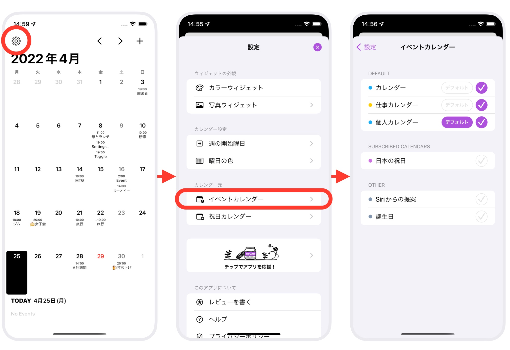

イベントカレンダーにカレンダーを設定すると、Ermineで予定の表示や編集、新規追加ができるようになります。（編集不可のカレンダーの場合は表示のみ）
Ermineは、端末に設定されているカレンダーに対して読み書きを行います。 利用カレンダーの選択は、最初の起動時の初期設定で行いますが、あとから設定画面でいつでも変更できます。
選択したカレンダーの中で、「デフォルト」にしたカレンダーが、新しく予定を追加するときに最初に選ばれるカレンダーになります。よく使うカレンダーを指定しておくと便利です。
「日本の祝日」など祝日用のカレンダーは、「祝日カレンダー」として別に登録しますので、ここでは読み書きを行いたいイベント用のカレンダーを選択してください。

カレンダーは、端末に設定している一覧（Appleの「カレンダー」アプリで見ることができるカレンダー）から選択できます。
別の新しいカレンダーを使いたい場合は、Appleの「カレンダー」アプリで新規カレンダーを作り、Ermineでイベントカレンダーとして選択してください。
また、端末に標準でセットされているカレンダー以外を使いたい場合は、「iCloud、Google、Exchange、Yahooカレンダーなどを使う」をご覧ください。